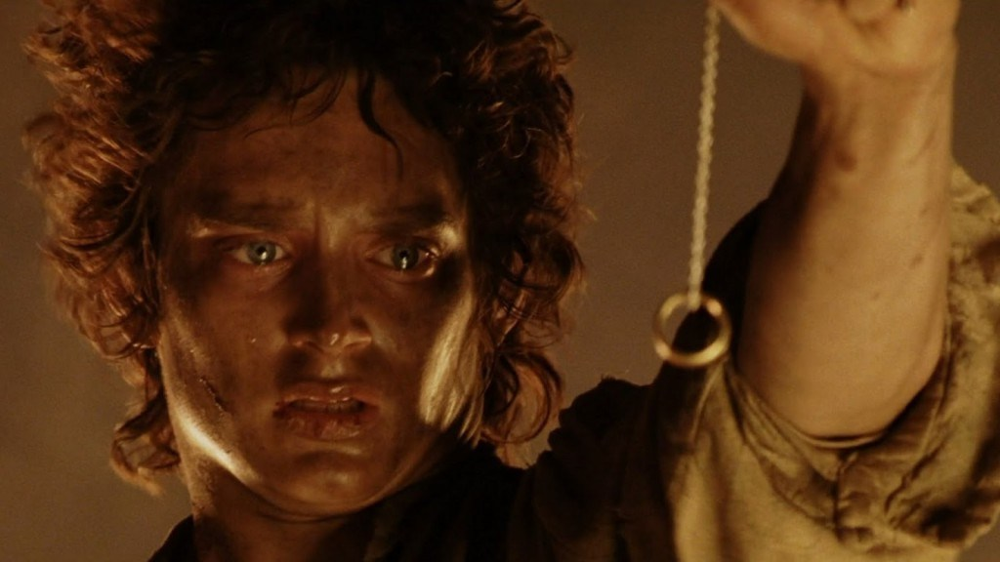

Lord of The Rings: The Return of The King
Release Date: 19 December 2003 (Turkey)
Genre: Action | Adventure | Drama | Fantasy
OSCAR WINNER:
Best Picture
Best Director
Best Writing, Adapted Screenplay
Best Film Editing
Best Art Direction-Set Decoration
Best Costume Design
Best Makeup
Best Music, Original Score
Best Music, Original Song
Best Sound Mixing
Best Sound Mixing
Budget:$94,000,000 (estimated)
Cumulative Worldwide Gross: $1,119,929,521, 25 November 2011
Runtime: 201 min
IMDb: 8,9/10
source
The third and final,The Lord of the Rings: The Return of the King is a 2003 fantasy adventure film co-produced, co-written,
and directed by Peter Jackson based on the second and third volumes of J. R. R. Tolkien's The Lord of the Rings.

Aragorn as The King
source
The final confrontation between the forces of good and evil fighting for control of the future of Middle-earth. Hobbits: Frodo and Sam reach Mordor in their quest to destroy the "one ring",
while Aragorn leads the forces of good against Sauron's evil army at the stone city of Minas Tirith.
Here is the last war Youtube video
Gondor is overrun by the orcs of Mordor,
and Gandalf rides to Minas Tirith to aid the humans in the war that is ahead.
 
Aragorn must realize his true identity and purpose as the King of Men, and journey with Gimli and Legolas to summon the Army of the Dead so that the battle against evil can be won.
Meanwhile, paranoia and suspicion rises between Frodo, Sam and Gollum as they continue their increasingly dark and dangerous travel to Mount Doom,
the one place where The Ring can be destroyed once and for all.
source
Made by Elif Köseler